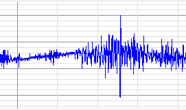
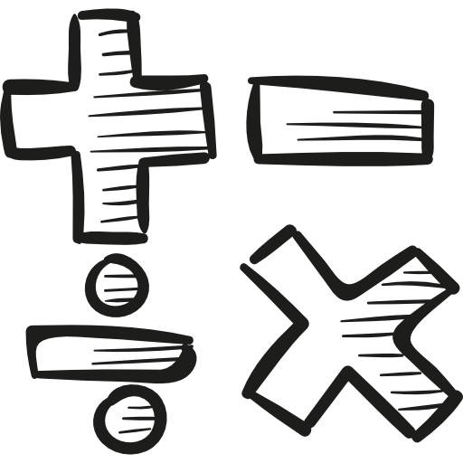
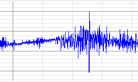
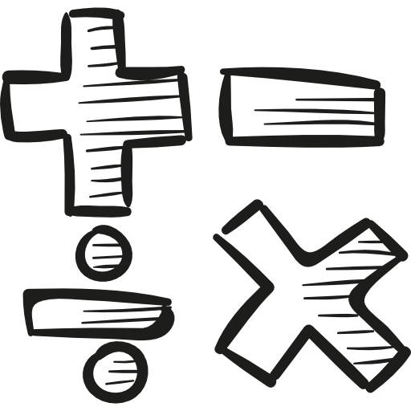

Lassonde School of Engineering
York University

Source: Inaara Ahmed-Fazal
Toronto General Hospital

Source: WebStockReview

Source: YA Web Design
|
Lab Assistant
Lassonde School of Engineering York University  Source: Inaara Ahmed-Fazal |
As a student research assistant, I collaborated with other interns to design an experiment that involved electromyography (EMG) to collect data for a Biomedical Engineering Professor's research on Smart Clothing technology. This process involved conducting trials with variation in EMG sensor placement and muscle movement with the objective of finding correlations in the data. It also involved documentation of the procedures in a technical report. |
| In this volunteer position, I completed administrative tasks at the nurses' station of a multi-organ transplant unit. These tasks included updating and filing patient charts, and facilitating communication between patients, visitors and nurses over phone and intercom. |
Volunteer Administrative Assistant
Toronto General Hospital
Source: WebStockReview |
|
Private Math Tutor
 Source: YA Web Design |
I worked with a student in Grade 11 Functions to build her understanding of key concepts in Math and increase her confidence in the subject. As part of this process, I thoroughly explained topics she found challenging, illustrating each with examples. I demonstrated a step-by-step approach to problem solving with practice problems in order to assist her in preparations for tests and a final exam. |